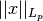
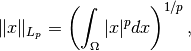
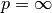
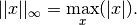
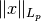

IndicatorLpUnitBall¶
-
class
odl.solvers.functional.default_functionals.IndicatorLpUnitBall(*args, **kwargs)[source]¶ Bases:
odl.solvers.functional.functional.FunctionalThe indicator function on the unit ball in given the
Lpnorm.It does not implement
gradientsince it is not differentiable everywhere.Notes
This functional is defined as
where  is the
 -norm, which for finite values
of
-norm, which for finite values
of  is defined as
is defined as
and for  it is defined as

The functional also allows noninteger and nonpositive values of the exponent
, however in this case  is not a
norm.- Attributes
adjointAdjoint of this operator (abstract).
convex_conjThe conjugate functional of IndicatorLpUnitBall.
domainSet of objects on which this operator can be evaluated.
exponentExponent corresponding to the norm.
grad_lipschitzLipschitz constant for the gradient of the functional.
gradientGradient operator of the functional.
inverseReturn the operator inverse.
is_functionalTrueif this operator’s range is aField.is_linearTrueif this operator is linear.proximalReturn the
proximal factoryof the functional.rangeSet in which the result of an evaluation of this operator lies.
Methods
_call(self, x)Apply the functional to the given point.
bregman(self, point, subgrad)Return the Bregman distance functional.
derivative(self, point)Return the derivative operator in the given point.
norm(self[, estimate])Return the operator norm of this operator.
translated(self, shift)Return a translation of the functional.
-
__init__(self, space, exponent)[source]¶ Initialize a new instance.
- Parameters
- space
DiscretizedSpaceorTensorSpace Domain of the functional.
- exponentint or infinity
Specifies wich norm to use.
- space